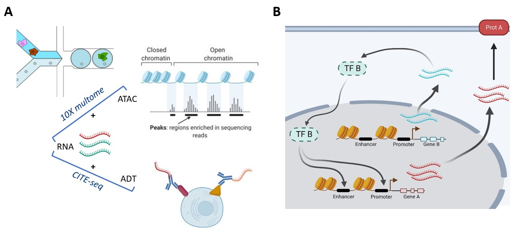
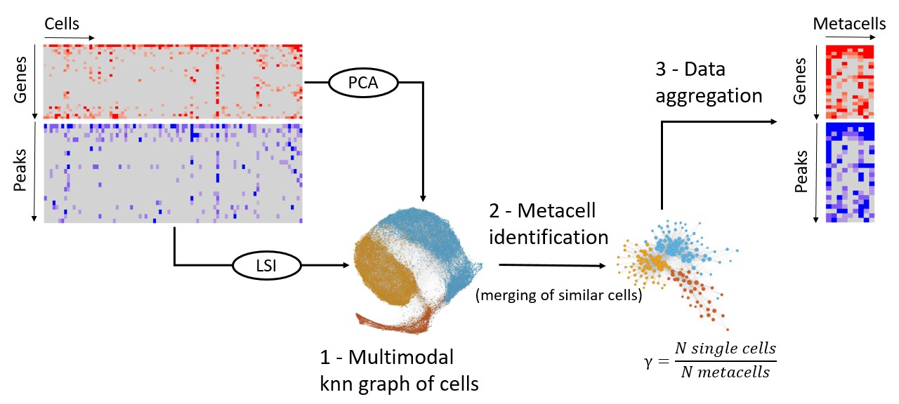
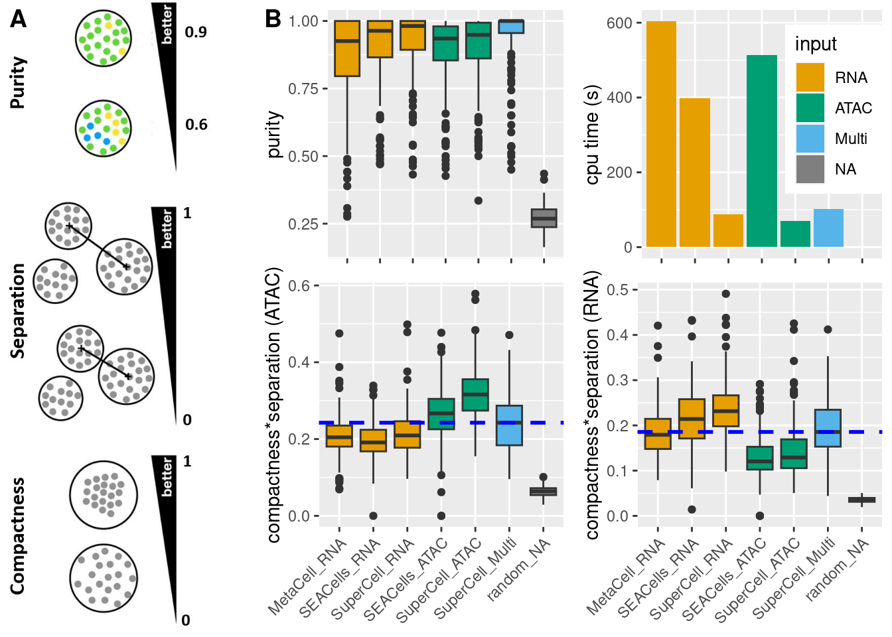
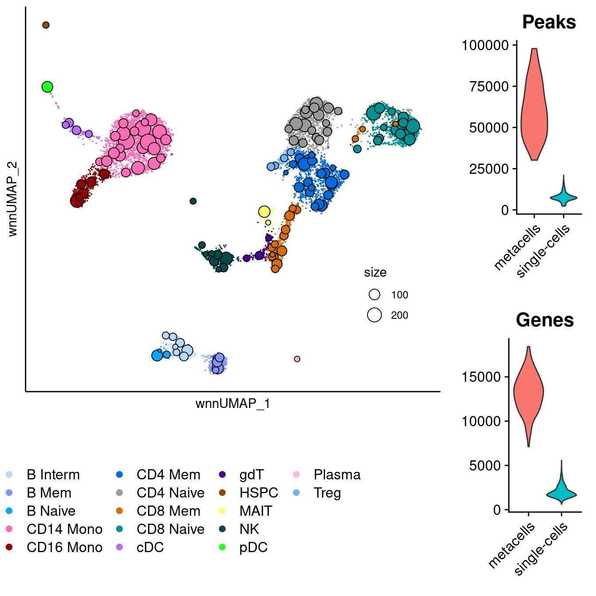
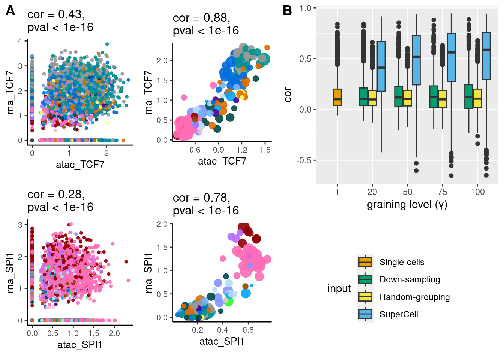
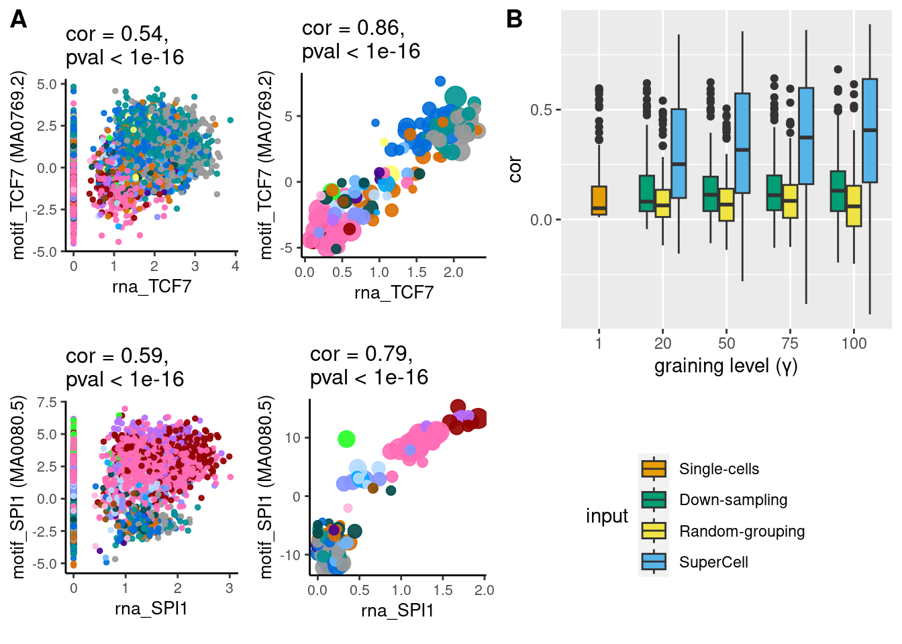
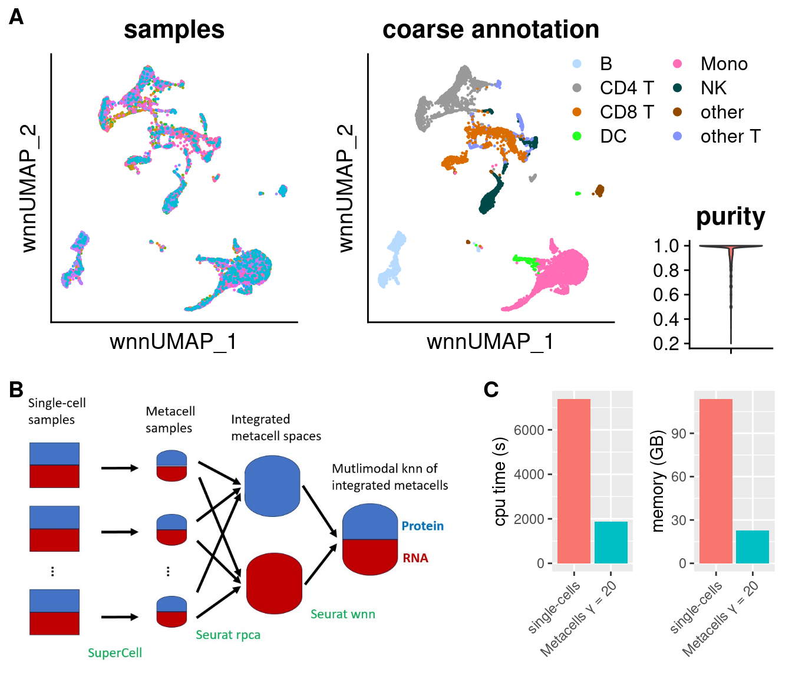
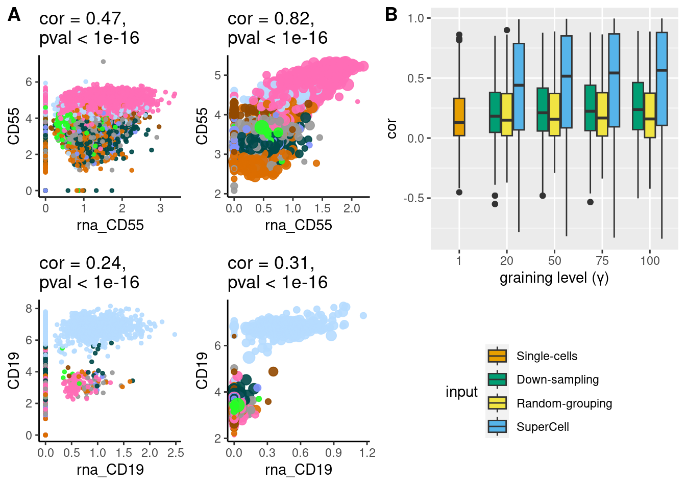
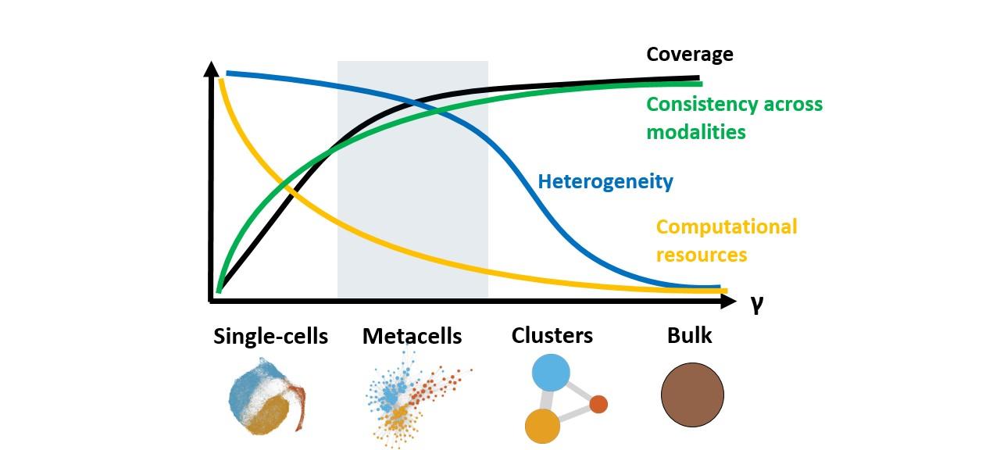

Metacells facilitate the analysis of single-cell multiomics data
Léonard Hérault 1,2, 
leonard.herault@unil.ch
Aurélie Gabriel1,2 Mariia Bilous1,2 David Gfeller1,2
1 Department of Oncology, Ludwig Institute for Cancer research, University of Lausanne
2 Swiss Institute of Bioinformatics
Introduction
- Single-cell multiomics: measurement of different modalities (e.g., ATAC, RNA, proteins) in the same cell (Fig.3A).
- Precise analysis of cell-type specific transcriptional regulation (Fig.3B).

Figure 1: Single-cell multiomics (A) can be used to study cell-type specific transcriptional regulation (B).
- Limitations: Large size, high sparsity of the data.
- Solution: Merging highly similar cells in metacells, proposed for scRNA-seq (Baran et al. 2019).
- Aim: Extension of
SuperCell(Bilous et al. 2022), to single-cell multiomics. (Fig.2B).

Figure 2: SuperCell workflow to identify multiomics metacells at a graining level γ. The multimodal knn graph is computed using the WNN method from Seurat (Hao et al. 2021).
Benchmark
Multiomodal version of SuperCell versus unimodal tools (Fig.3):
- Purer metacells
- Compact and separated metacells in both modalities
- Faster

Figure 3: A Benchmark metrics. B Benchmark results of metacell tools on a 10x multiome (RNA + ATAC) dataset of PBMCs, graining level γ=75. Tools: new version of SuperCell, SEACells (Persad et al. 2023), MetaCell2 (Ben-Kiki et al. 2022).
SuperCell Analyses
10X multiome dataset of PBMCs
SuperCell identifies robust metacells in the PBMC multiomic space (Fig.4).

Figure 4: Identified metacells in the multiomic space of PBMCs, graining level γ = 75.
Gene accessibility and expression appear more correlated at the metacell level (Fig.5).

Figure 5: A. Gene accessibility - gene expression correlation for TCF7 and SPI1. Left: Single-cell level, right: metacells γ = 75. Same color legend as in Fig.4. B. Same correlations for the 2000 highly variable genes (on RNA) with increasing γ.
Correlation between transcription factor (TF) expression and corresponding motif accessibility also becomes clearer using metacells (Fig.6).

Figure 6: A. TF expression (RNA) - motif accessibility (ATAC) correlation for TCF7 and SPI1. Left: single-cell, right: metacells, γ = 75. Same color legend as in Fig.4. B. Same correlations for 200 TFs (with cor > 0.01 in single-cells) with increasing γ.
CITE-seq atlas of 160,000 PBMCs
- Identification of metacells by sample (γ = 20).
- Correction of the batch effect at the metacell level (Fig.7A&B).
- This workflow runs on a standard laptop (Fig.7C).

Figure 7: A. UMAP visualizations of 8,000 multiomic metacells, metacell purities with respect to original annotation from (Hao et al. 2021). B. Metacell workflow. C. Computational resources used by single-cell and metacell workflows.
RNA-protein correlation in the CITE-seq atlas is increased with metacells (Fig.8).

Figure 8: A. RNA-protein correlation for CD55 and CD19 in the 8 reference samples. Left: Single-cell level, right: metacells γ = 20 Same color legend as in Fig.7. B. RNA-Protein correlation for 213 gene-protein pairs with increasing γ.
Conclusion

Perspectives
- Downstream analyses of sc-multiomics:
- gene regulatory network inference
- multiomic velocity
- Metaspots for spatial-omics
References
Baran, Yael, Akhiad Bercovich, Arnau Sebe-Pedros, Yaniv Lubling, Amir Giladi, Elad Chomsky, Zohar Meir, Michael Hoichman, Aviezer Lifshitz, and Amos Tanay. 2019. “MetaCell: Analysis of Single-Cell RNA-Seq Data Using K-Nn Graph Partitions.” Genome Biology 20 (1): 206. https://doi.org/10.1186/s13059-019-1812-2.
Ben-Kiki, Oren, Akhiad Bercovich, Aviezer Lifshitz, and Amos Tanay. 2022. “Metacell-2: A Divide-and-Conquer Metacell Algorithm for Scalable scRNA-Seq Analysis.” Genome Biology 23 (1): 100. https://doi.org/10.1186/s13059-022-02667-1.
Bilous, Mariia, Loc Tran, Chiara Cianciaruso, Aurélie Gabriel, Hugo Michel, Santiago J. Carmona, Mikael J. Pittet, and David Gfeller. 2022. “Metacells Untangle Large and Complex Single-Cell Transcriptome Networks.” BMC Bioinformatics 23 (1): 336. https://doi.org/10.1186/s12859-022-04861-1.
Hao, Yuhan, Stephanie Hao, Erica Andersen-Nissen, William M. Mauck, Shiwei Zheng, Andrew Butler, Maddie J. Lee, et al. 2021. “Integrated Analysis of Multimodal Single-Cell Data.” Cell 184 (13): 3573–3587.e29. https://doi.org/10.1016/j.cell.2021.04.048.
Persad, Sitara, Zi-Ning Choo, Christine Dien, Noor Sohail, Ignas Masilionis, Ronan Chaligné, Tal Nawy, et al. 2023. “SEACells Infers Transcriptional and Epigenomic Cellular States from Single-Cell Genomics Data.” Nature Biotechnology, March, 1–12. https://doi.org/10.1038/s41587-023-01716-9.